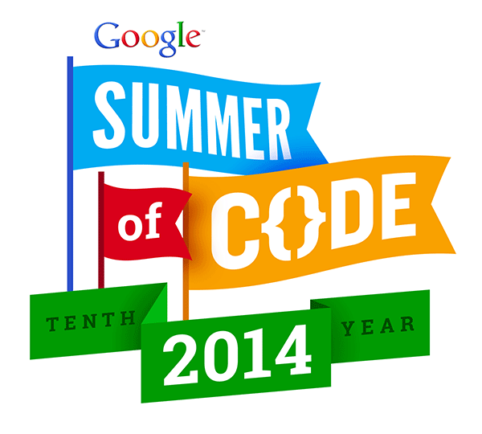

jBPM accepted on Google Summer of Code 2014!
I’m thrilled to share with the whole Drools & jBPM community that once again a student has being accepted in the Google Summer Of Code Program to work in the projects for the Summer. This year Google will be funding Nicolas Gomes (from Argentina) to work on the jBPM project. Nicolas task will be to work towards the integration of the KIE Workbench with a Content Management System such as Magnolia.

- GSoC 2013
The integration will involve the backend services and front end screens to work with documents from end to end.
Here you can find all the accepted projects this year (2014):
Nicolas has also started a blog where he will sharing the integration progress,
You can also follow him on twitter:
twitter: @nicolasegomez
As I will be mentoring the work, I will be also sharing some updates and videos about how the work is being done. So stay tuned and feel free to leave comments in Nicolas’ blog regarding his proposals for the work that needs to be done. If you are looking to do something similar please get in touch with Nicolas or with myself so we can coordinate the work.